Previous slide Next slide Toggle fullscreen Open presenter view
Sound (Art & Technology)
FM Synthesis and Digital Sound
Lorenz Schwarz
Winter Semester 2023/24Sound (Art & Technology)
I. Computer Music Foundations
Lorenz Schwarz | WS 2023/2024
There are no theoretical limitations to the performance of the computer as a source of musical sounds, in contrast to the performance of ordinary instruments.
— Max MathewsThe Digital Computer as a Musical Instrument (1963)
Lorenz Schwarz | WS 2023/2024
Lorenz Schwarz | WS 2023/2024
Max Vernon Mathews (1926–2011)
American pioneer of computer music at Bell Laboratories:
Developed MUSIC I (1957) , first widely-used program for computer sound generation
Created GROOVE (1970) , first real-time interactive music synthesis system
Programmed "Daisy Bell" (1961) , computer-synthesized singing (inspired HAL 9000)
→ Max/MSP software named in his honor
Lorenz Schwarz | WS 2023/2024
Audio Example 1:
Daisy Bell (1961) - IBM 7094
▶ Play excerpt
Lorenz Schwarz | WS 2023/2024
Daisy Bell (1961)
The first computer-synthesized song created with IBM 7094 computer at Bell Labs:
Demonstrated music synthesis potential
Milestone in computer music history
Inspired HAL 9000 singing in 2001: A Space Odyssey (1968)
→ The MUSIC-N programming language lead to current software like Max/MSP, SuperCollider, and Reaktor
Lorenz Schwarz | WS 2023/2024
Computer music
Computer as universal instrument without physical limitations
1. Composition
2. Sound synthesis
3. Sound control
Lorenz Schwarz | WS 2023/2024
The computer as instrument
Discrete numbers represent sound pressure samples, enabling digital representation and processing.
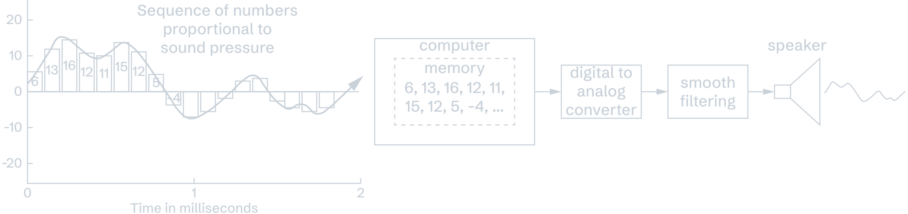
II. John Chowning and FM Synthesis
Lorenz Schwarz | WS 2023/2024
Lorenz Schwarz | WS 2023/2024
John Chowning (*1934)
American composer and computer music pioneer
Education and influences:
Studied composition with Nadia Boulanger, Paris (1959–61)
Doctoral degree, Stanford University (1966) with Leland Smith
Worked with Max Mathews at Bell Telephone Laboratories
Lorenz Schwarz | WS 2023/2024
Chowning's research at Stanford AI Lab
Acquired MUSIC IV from Max Mathews, studied:
Computer programming and hardware
Psychoacoustics (spatial perception, localization)
Acoustics (physics of sound and reverberation)
Mathematics (Doppler shift for movement simulation)
→ Fascination with composing for loudspeakers as spatial instruments
Lorenz Schwarz | WS 2023/2024
Compositional approach
Spatial compositions with sounds possessing "internal dynamism"
Liberation of musical sound from physical constraints through computer synthesis
Constraint: Non-real-time processing required 10+ minutes to compute a few seconds of audio
Lorenz Schwarz | WS 2023/2024
Spatial music through quadraphonic synthesis
System: 4-channel DAC creating illusory acoustic environments
Psychoacoustic parameters controlled:
Movement: Doppler shift simulates sound trajectoryDistance: Direct-to-reverberant signal ratioAzimuth/Position: Energy distribution across speakers
Lorenz Schwarz | WS 2023/2024
Lorenz Schwarz | WS 2023/2024
Discovery of FM synthesis
Accident through experimentation (1967):
Jean-Claude Risset mentioned additive synthesis from his projects with trumpet sounds
Chowning experimented with simple two-oscillator system
Discovered FM's ability to create complex timbres efficiently
Lorenz Schwarz | WS 2023/2024
First commercially sucessful digital synth
Simple algorithm (two oscillators) generates rich, controllable spectra
Analysis-by-synthesis approach to trumpet timbre
Both harmonic and inharmonic spectra possible
→ Patent licensing of the technology by Stanford University to Yamaha (~20 million dollars)
Lorenz Schwarz | WS 2023/2024
Founding of CCRMA (1975)
Center for Computer Research in Music and Acoustics
First university center dedicated to computer music
Home to innovations in spatialization, FM, physical modeling
Continues as leading research facility today
Lorenz Schwarz | WS 2023/2024
III. Audio Fundamentals
Lorenz Schwarz | WS 2023/2024
Important audio concepts for FM
Timbre and Spectrum - Distribution of frequency components
Partials and harmonics - Building blocks of complex sounds
Fourier transform - Analyzing sounds into sine wave components
Lorenz Schwarz | WS 2023/2024
Timbre and spectrum
Timbre (perceptual):
Spectrum (technical):
Listen to the same pitch (C4 = 260 Hz):
Trumpet: Clarinet:
→ Same pitch, different timbre
Lorenz Schwarz | WS 2023/2024
Comparing clarinet and trumpet at C4 (260 Hz)
Lorenz Schwarz | WS 2023/2024
Understanding spectra with a sawtooth wave
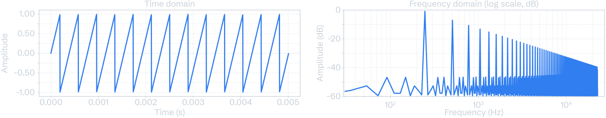
Each peak in the spectrum represents one sine wave (partial or harmonics)
Harmonic series 260, 520, 780, 1040... Hz
▶ Play sawtooth wave C4 = 260 Hz
Lorenz Schwarz | WS 2023/2024
Pure tone (sine wave)
A sine wave
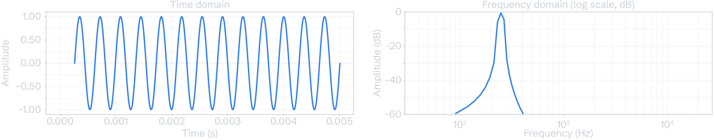
View sine wave on Desmos
Lorenz Schwarz | WS 2023/2024
Complex tones (example: sawtooth)
Musical instrument sounds and basic waveforms (except sine) contain many sine waves (click for graphing calculator)
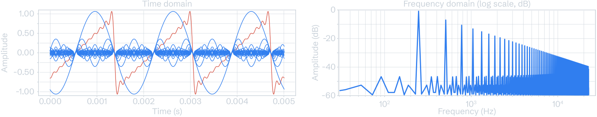
Lorenz Schwarz | WS 2023/2024
Fourier transform converts time domain (waveform) to frequency domain (spectrum):
Reveals the individual sine wave components of any sound
Shows which frequencies are how strong
→ Proves that complex sounds are sums of sine waves
Lorenz Schwarz | WS 2023/2024
Additive synthesis
Concept: Build complex sounds by adding sine waves together
Challenges:
Requires many oscillators (one per partial)
Controlling timbre changes over time is complex
Computationally expensive
→ Additive synthesis: conceptually simple, practically expensive
Lorenz Schwarz | WS 2023/2024
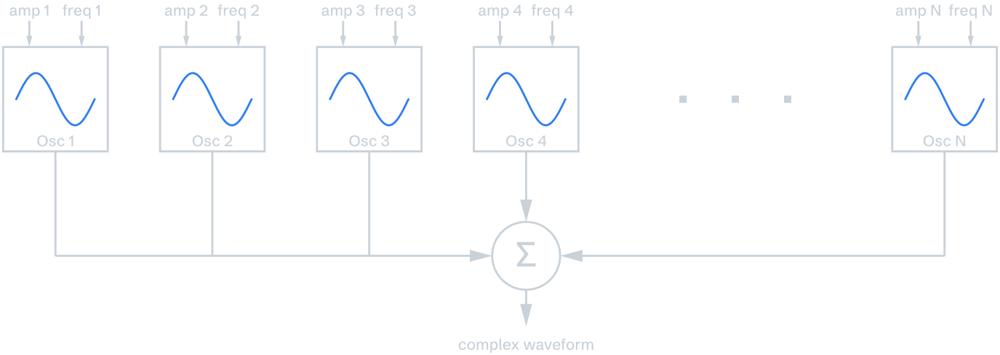
Simplified schematic of additive synthesis
Lorenz Schwarz | WS 2023/2024
Subtractive synthesis
Alternative approach: Generate rich harmonic content, then filter out unwanted frequencies
Process:
Oscillator generates complex waveform (sawtooth, square)
Filter removes unwanted frequency components
Envelope controls amplitude over time
→ More efficient than additive synthesis, but offers less spectral control
Lorenz Schwarz | WS 2023/2024
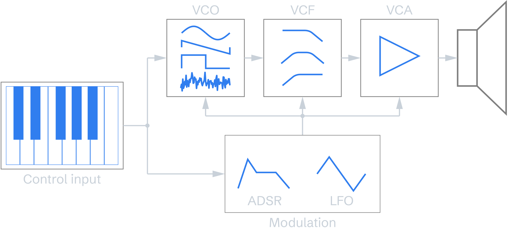
Simplified schematic of voltage controlled subtractive synthesis.
Efficiency of FM synthesis
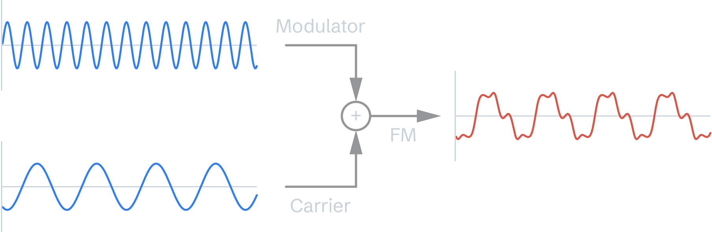
Uses two oscillators (carrier + modulator)
Generates rich, controllable spectra through frequency modulation
Simple algorithm creates both harmonic and inharmonic sounds
→ Achieves rich timbral control with minimal parameters
Lorenz Schwarz | WS 2023/2024
IV. FM Theory
Lorenz Schwarz | WS 2023/2024
Origins of frequency modulation
Mainly developed by radio broadcasting engineer Edwin Armstrong (1890 - 1954) for transmitting high-fidelity sound over broadcast radio (since the late 1930)
Lorenz Schwarz | WS 2023/2024
Simple frequency modulation (FM)
In FM synthesis, the instantaneous frequency of a carrier oscillator (C) is varied according to the output of a modulator oscillator (M).
Carrier frequency (C) - Sets the perceived pitch
Modulator frequency (M) - Determines harmonic/inharmonic character
Modulation depth (D) - Controls spectral brightness/richness
Lorenz Schwarz | WS 2023/2024
FM synthesis parameters
The resulting frequency components are determined by:
Ratio between Carrier and Modulator
Modulation depth (D)
→ These two parameters control the entire spectral output.
click for graphing calculator
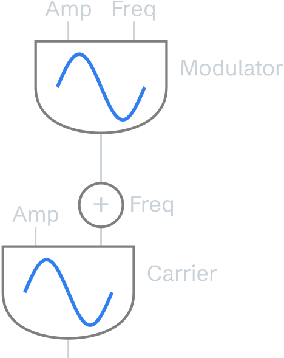
Lorenz Schwarz | WS 2023/2024
Detuning the oscillators
If the carrier is detuned, the entire harmonic spectrum shifts up or down by that same amount.
Detuning the modulator compresses or expands the separation between the sidebands
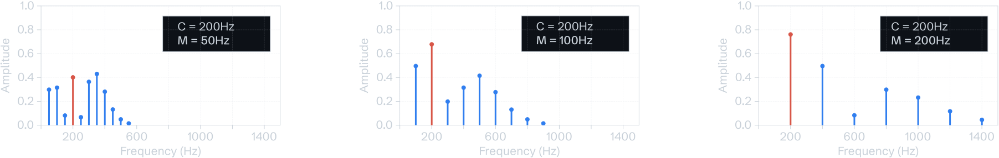
From left to right: increasing modulator frequency results in wider spacing
Lorenz Schwarz | WS 2023/2024
Basic formula:
Parameters:
Lorenz Schwarz | WS 2023/2024
Derived FM parameters
Harmonicity ratio:
Modulation index:
Controls the number of significant frequency components (sidebands)
Lorenz Schwarz | WS 2023/2024
Sidebands (spectral components)
New frequency components appear in pairs symmetrically around the carrier frequency and define the timbre of the sound:
Lorenz Schwarz | WS 2023/2024
Calculating the sidebands
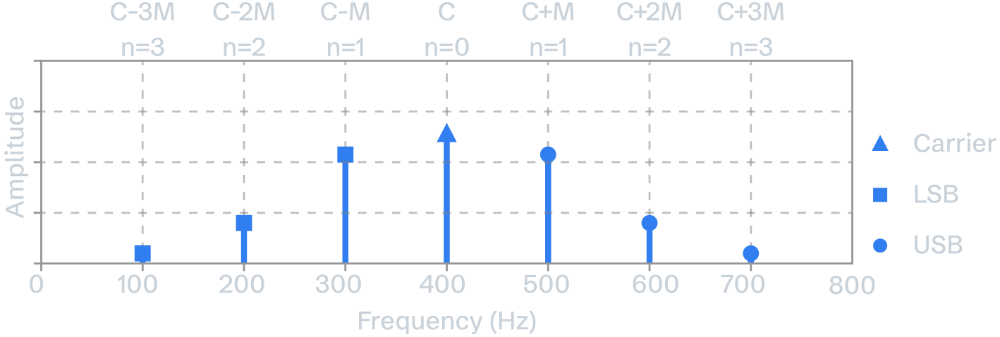
Each sideband pair has the same amplitude.
Lorenz Schwarz | WS 2023/2024
Reflected sidebands and interference
Lower sidebands extending below 0 Hz reflect at zero with a 180° phase shift, potentially interfering with positive-frequency components.
Coincident series (e.g., 1:1, 2:3 ratio):
Reflected sidebands land on existing positive frequencies
Non-coincident series (e.g., 3:5 ratio):
Reflected sidebands fall between positive frequencies
Lorenz Schwarz | WS 2023/2024
Coincident vs. non-coincident series
Lorenz Schwarz | WS 2023/2024
Control over a sound's "brightness"
Modulation index
Number of significant (perceivable) frequency components increases with
→ Increasing the modulation index creates more sidebands with greater amplitudes, redistributing energy across the spectrum and increasing spectral richness.
Lorenz Schwarz | WS 2023/2024
Harmonicity ratio and spectral character
The ratio between M and C determines the harmonicity of the resulting spectrum.
Harmonicity ratio:
→ If
→ If
Lorenz Schwarz | WS 2023/2024
Lorenz Schwarz | WS 2023/2024
Listening examples: FM spectra
Simple (C=260, H=1.0, I=0.5) Rich harmonic (C=260, H=1.0, I=5.0) Complex rational (C=260, H=1.3, I=6.0) Odd harmonics (C=260, H=2.0, I=3.0) 2:3 ratio (C=260, H=1.5, I=3.0) Inharmonic √2 (C=260, H=1.414, I=3.0) Sub-harmonic (C=650, H=0.25, I=2.1) Irrational π (C=100, H=3.14159, I=4.0) Extreme (C=100, H=1.3, I=9.0)
Lorenz Schwarz | WS 2023/2024
Calculating sideband amplitudes
Sideband amplitudes are determined by mathematical scaling factors known as Bessel functions of the first kind:
The amplitude of the
Total average power of the signal remains constant, only the spectral distribution of that energy changes.
→ Bessel functions act as a mathematical "lookup table"
Lorenz Schwarz | WS 2023/2024
Lorenz Schwarz | WS 2023/2024
Dynamic timbres
Coupling an envelope to both the carrier amplitude and modulator level creates realistic, brass-like dynamic changes in both loudness and brightness
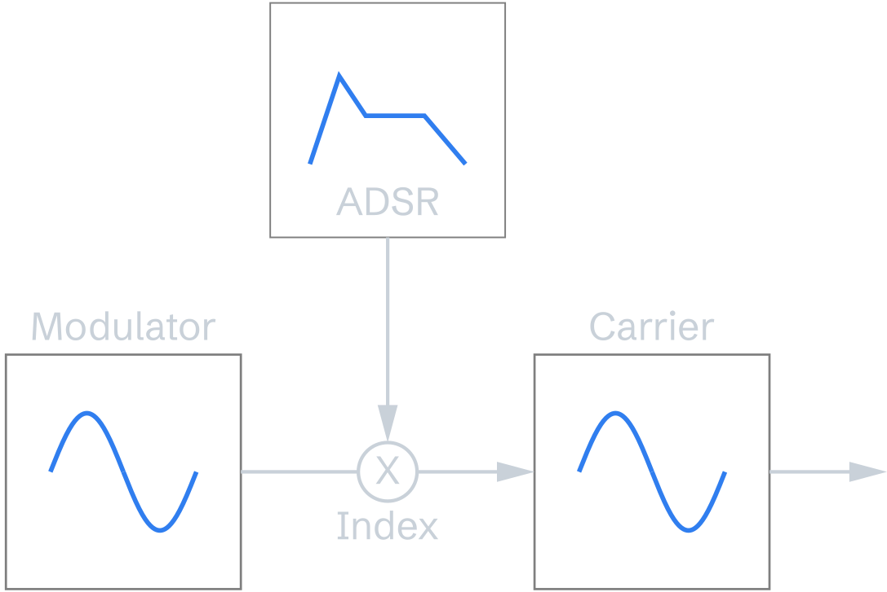
Lorenz Schwarz | WS 2023/2024
Multiple modulators
Parallel modulators (M1→C, M2→C):
Sideband series add together
Cascaded modulators (M1→M2→C):
Each sideband from M1→M2 acts as a sine wave modulator for the carrier
Result: sidebands of sidebands (exponential spectral growth)
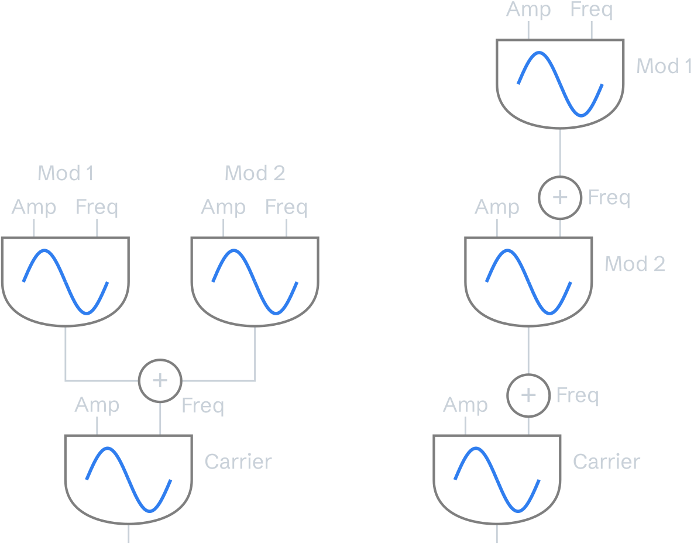
Lorenz Schwarz | WS 2023/2024
Feedback in FM
Feedback routes an operator's output back to its own input:
Generates spectral complexity without additional oscillators
Creates additional sideband frequencies beyond standard FM pairs
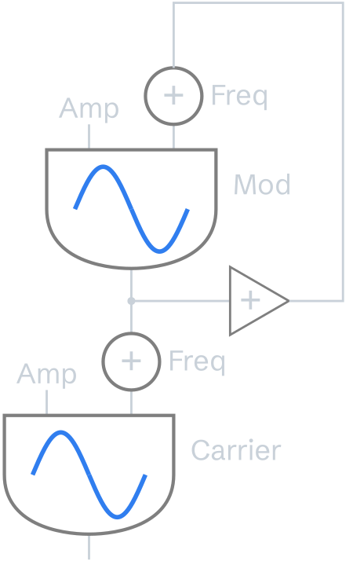
Lorenz Schwarz | WS 2023/2024
Phase modulation (PM)
PM is the derivative of FM. It varies the phase angle rather than frequency, but produces identical sidebands to FM.
Digital FM synthesis uses PM because:
More stable with feedback loops
Easier to implement digitally
Same audible result as true FM
→ All digital FM synthesizers (DX7, etc.) actually use PM
Lorenz Schwarz | WS 2023/2024
V. FM Applications
Lorenz Schwarz | WS 2023/2024
Yamaha DX7 (1983)
The Yamaha DX7 brought Chowning's academic research to consumer market and defined 1980s sound (pop, new wave, film scores)
First affordable digital synthesizer using FM
Over 2 million units sold (best-selling synth ever)
16-note polyphony
61-note keyboard with velocity sensitivity
32 algorithms (6 sine wave operators each)
→ Stanford earned ~$20 million from Yamaha patent
Lorenz Schwarz | WS 2023/2024
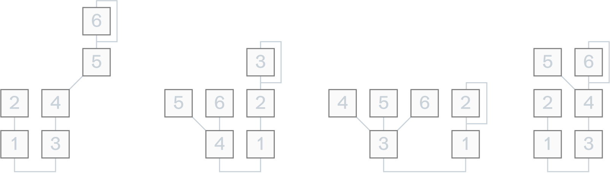
Examples of 4 algorithms (configurations of operators) to generate sounds through carrier/modulator relationships.
Lorenz Schwarz | WS 2023/2024
Other FM synthesizers
Current hardware and software FM synthesizers:
Lorenz Schwarz | WS 2023/2024
FM synthesis in Max/MSP
Basic implementation:
Two cycle~ objects (oscillators)
*~ object for introducing modulation depth control+~ object to add modulation to carrier frequency
→ simpleFM~ abstraction
Lorenz Schwarz | WS 2023/2024
VI. Turenas
Lorenz Schwarz | WS 2023/2024
Turenas (1972) (quadraphonic version)
Title: Anagram of "Natures"
All sounds created through FM synthesis
No recordings or traditional instruments
Quadraphonic spatialization with Doppler shifts
Movement through virtual acoustic space
Demonstrates FM's ability to create complex, organic timbres
→ Established FM as legitimate compositional tool
Lorenz Schwarz | WS 2023/2024
VII. Artistic Research
Lorenz Schwarz | WS 2023/2024
FM Synthesis and artistic research
Discovery emerged from compositional practice (sound spatialization)
Required teaching himself advanced mathematics, programming, and signal processing
Six years of systematic research to make it musically controllable
Continuous artistic application used in his own compositions and widely adopted by other artists
A major patent licensing success for Stanford with significant impact on the music industry
→ Artistic inquiry and scientific understanding enabled genuine innovation
Lorenz Schwarz | WS 2023/2024
Appendix
Lorenz Schwarz | WS 2023/2024
Determining the fundamental frequency
For rational harmonicity ratios
Example:
→ All sideband frequencies are integer multiples of 26 Hz.
Lorenz Schwarz | WS 2023/2024
Literature
Chowning, John. "Turenas: the realization of a dream." Journées d'Informatique Musicale. Université de Saint-Etienne, 2011.
Chowning, John. "The Synthesis of Complex Audio Spectra by Means of Frequency Modulation." Computer Music Journal. Vol. 1, No. 2 (April, 1977), pp. 46-54.
Chowning, John. "Fifty Years of Computer Music: Ideas of the Past Speak to the Future." Lecture Notes in Computer Science, pp. 1–10, https://doi.org/10.1007/978-3-540-85035-9_1 .
Mathews, M. V. “The digital computer as a musical instrument.” Science, vol. 142, no. 3592, Nov. 1963, pp. 553–557, https://doi.org/10.1126/science.142.3592.553 .
Truax, Barry. "Organizational techniques for c: m ratios in frequency modulation." Computer Music Journal. Vol. 1, No. 4 (November 1977), pp. 39-45.
Roads, C., and Max Mathews. “Interview with Max Mathews.” Computer Music Journal, vol. 4, no. 4, 1980, p. 15, https://doi.org/10.2307/3679463 .
Copyright and Licensing
Original content: © 2025 Lorenz SchwarzCC BY 4.0 — attribution required for all reuse .
Includes: text, diagrams, illustrations, photos, videos, and audio.
Third-party materials: Copyright respective owners, educational use.
Contact: lschwarz@hfg-karlsruhe.de
Source: Mathews, M. V. "The digital computer as a musical instrument."
Science, vol. 142, no. 3592, Nov. 1963, pp. 553–557.
https://doi.org/10.1126/science.142.3592.553
Audio: Daisy Bell, IBM 7094 (1961)
Public domain
Stanley Kubrick (1928 – 1999), American film director, screenwriter, producer, and photographer
Image: John Chowning at the Vox Festival
Photo: Histeria
Source: Sound on Sound
https://www.soundonsound.com/people/john-chowning
Fair use for educational purposes
METHOD AND APPARATUS FOR SIMULATING LOCATION AND MOVEMENT OF
SOUND, US Pat. 3665105 - Filed Mar 9, 1970 Patented May 23, 1972
no applications (surround sound came later)
**Notable figures:** John Chowning, Julius Smith, Chris Chafe, Jonathan Berger
- Clear harmonic series: 260, 520, 780, 1040... Hz
- Amplitude decreases as 1/n (each harmonic gets quieter)
- All harmonics present (1, 2, 3, 4...)
relative amplitudes of harmonics is $\dfrac{1}{n}$
**Example:** Organ pipes - each stop adds harmonics
<center>Subtractive Synthesis</center>
FM is powerful because it creates many effective partials efficiently
lorenz schwarz
Don Buchla designes VCOs with linear FM input (?) in the 1960s
Relationship between carrier and modulator frequencies
Amount of frequency deviation
Time-varying: $$x(t) = A(t) \cos (2 \pi f_c t + I(t) \sin (2\pi f_m t))$$
- upper sidebands (USB)
- lower sidebands (LSB)
- each sideband pair has the same amplitude
odd numbered components in the lower band
have phase shifted 180°.
($C, \; C+M, \; C-M, \; C+2M, \; C-2M, \; C+3M, \; C - 3M, C+4M, \; C - 4M, ...$)
USB: $C+M, \; C+2M, \; C+3M, \; C+4M$
LSB: $C-M, \; C-2M, \; C-3M, \; C-4M$
┌─────────────────────────────┬─────────────────────────────┬─────────────────────────────┐
│ ROW 1: MODULATION INDEX PROGRESSION (C=260 Hz, H=1.0) │
├─────────────────────────────┼─────────────────────────────┼─────────────────────────────┤
│ C=260, H=1.0, I=0.5 │ C=260, H=1.0, I=5.0 │ C=260, H=1.3, I=6.0 │
│ Few sidebands │ Many sidebands │ High complexity │
│ Simple spectrum │ Rich spectrum │ Rational harmonic │
├─────────────────────────────┼─────────────────────────────┼─────────────────────────────┤
│ ROW 2: HARMONICITY RATIO EFFECTS (I=3.0 for comparison) │
├─────────────────────────────┼─────────────────────────────┼─────────────────────────────┤
│ C=260, H=2.0, I=3.0 │ C=260, H=1.5, I=3.0 │ C=260, H=1.414, I=3.0 │
│ Odd harmonics only │ Complex harmonic (2:3) │ Inharmonic (√2) │
│ Clarinet-like │ Partial harmonic series │ Bell-like │
├─────────────────────────────┼─────────────────────────────┼─────────────────────────────┤
│ ROW 3: SPECIAL CASES (pedagogical extremes) │
├─────────────────────────────┼─────────────────────────────┼─────────────────────────────┤
│ C=650, H=0.25, I=2.1 │ C=100, H=π, I=4.0 │ C=100, H=1.3, I=9.0 │
│ No reflections │ Irrational (π) │ Extreme complexity │
│ Sub-harmonic (M<C) │ Dense inharmonic │ Very high I │
└─────────────────────────────┴─────────────────────────────┴─────────────────────────────┘
$$x(t) = \dfrac{\pi}{2} \sin ({f_2} 2 \pi t + \dfrac{\pi}{2} \sin ({f_2} 2\pi t))$$
**First affordable digital synthesizer using FM:**
**Tutorial:** [MSP Synthesis Tutorial 5: Frequency Modulation](https://docs.cycling74.com/max8/tutorials/06_synthesischapter05)
**Duration:** ~10 minutes
* Roads, Curtis. *Computer Music Tutorial.* The MIT Press, 1996.